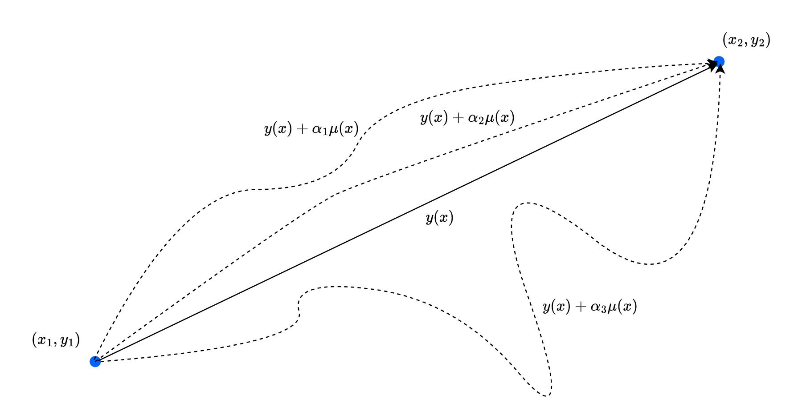

An inquiry of theoretical mechanics - the Lagrangian
At some point after learning all the basic of Newtonian formalism of physical law, one may want to apply it to real world problem. This is no big deal, as far as we are concerned of… Unless, one wants to apply it to higher, more complex system. At that point, the problem become not so trivial. Not so trivial how, well, later on we will see. For now, we only have to know that a fine gentleman named Joseph-Louis Lagrange (ジョゼフ＝ルイ・ラグランジュ), gave us the more likely approach to mechanics - the Lagrangian mechanics.
There are two ways to see mechanics and its principles. The first one is by considering it as a theory of forces, the causes that impress motion. The second is by considering it as a theory of motions themselves. (Lazare Carnot, 1803)
Calculus of variation
It seems like a tradition - that every course of Lagrangian mechanics and beyond (Hamiltonian mechanics) begins with the discussion of the calculus of variation1. So, per tradition, we will also begin with such. It is to noticed, for the one who just started learning about Lagrangian mechanics that it will seem so unncessary. But, later on, perhaps one’s perspective will change.
1 Well, it is in fact, not coincidental. Another name of Lagrangian mechanics is called the variational physics.
Shortest path between two points
Given two points \((x_{1}, y_{1})\) and \((x_{2}, y_{2})\), what is the shortest path between them, given by a path \(y=y(x)\)? Assuming the space is continuous (so do Euclid’s favour), then we might say that the shortest path is the straight line. But how do we formulate such?

We can indeed calculate the length of the path by using the arc length, which gives us: \[ L(1,2) = \int_{1}^{2} \: ds = \int_{x_{1}}^{x_{2}} \sqrt{1+y'(x)^{2}} \: dx \] This is applicable for all path functional \(y(x)\) that gives us the desired path. If we want to somehow prove that the shortest path is indeed straight, then we will have to find if the straight formulation is indeed the minimum in such case. Do remember however, that the minimum of an integral, is not taking it to be zero area. Rather, it is to prove that the length is wised enough to be straight. We are finding a function, and having to make it to be straight - which will satisfy our problem statement. You can think of the integral as being bounded below by the minimum, if that makes sense. If that does not help, then imagine this: that function \(\sqrt{1+y'(x)^{2}}\) is not going to be zero. But you can fine the minimum of it regardless of any addition form \(\mu(x)\) added on top.
The problem that we are facing is interestingly interpretable as the problem of finding the stationary point - the point where if you wiggle around a bit, nothing will particularly change of the state of the system. Our concern is hence how the infinitesimal variations of a path change an integral - in which perhaps we want it to… not move that much? For such reason, comes the title of this section being calculus of variations.
The Euler-Lagrange Equation
We can rewrite the integral as \[ S= \int_{x_{1}}^{x_{2}} f[y(x),y'(x),x]\: dx \] where \(y(x)\) is the unknown curve joining two points 1 and 2. We have the condition that \(y(x_1) = y_1\), and \(y(x_2)=y_2\) for such reason. How about the wrong version? The class of all wrong curves can be defined to be \(Y(x)\) of the additional length term, \(\eta(x)\) 2. The formulation is hence \[ Y(x) = y(x) + \alpha \eta (x) , \quad \eta: \mathbb{R}^{n} \to \mathbb{R} \] If the factor \(\alpha=0\), we get the original curve. If not, we get the wrong curve, ideally for \(\alpha =1\). Unfortunately, this formation will be dependent of the difference function \(\eta\), since it is strictly restricted to the linearity expression \(\alpha \eta(x)\). Nevertheless, we have that \(\eta(x_1)=\eta(x_2)=0\), to satisfies the endpoint requirement of a path.
2 Last time, we used \(\mu(x)\). Now, we kinda… switch the notation a bit.
3 This comes from the derivation of the integration by part, for the endpoint already eliminated the first term, hence.
From our formulation, we imply that the right curve is found at \(\alpha = 0\), or rather, the stationary state is achieved at such point, for the integral, now called \(S(\alpha)\). We have converted our problem to the traditional problem of making sure that an ordinary function \(S(\alpha)\) has a minimum at a specified point. To do this, we again, take the derivative. \[ \begin{split} S(\alpha) & = \int_{x_{1}}^{x_{2}} f(Y,Y',x)\: dx\\ & = \int_{x_{1}}^{x_{2}} f(y+\alpha \eta, y'+\alpha \eta', x)\: dx\\ \end{split} \] From this, \[ \frac{dS}{d\alpha} = \int_{x_{1}}^{x_{2}} \frac{\partial f}{\partial \alpha} \: dx = \int_{x_{1}}^{x_{2}} \left( \eta \frac{\partial f}{\partial y} + \eta \frac{\partial f}{\partial y'} \right)\: dx \] which is derived of the chain rule. Now we need this integral to be zero, that is: \[ \int_{x_{1}}^{x_{2}} \left( \eta \frac{\partial f}{\partial y} + \eta \frac{\partial f}{\partial y'} \right)\: dx =0 \] This condition must hold for any \(\eta(x)\) satisfying the requirement only, for any choice of the wrong path. The integral can be simplified to 3 \[ \int_{x_{1}}^{x_{2}} \eta(x) \frac{\partial f}{\partial y'} \: dx = - \int_{x_{1}}^{x_{2}} -\eta(x)\frac{d}{dx}\left( \frac{\partial f}{\partial y'} \right) \: dx \]
Substituting this in, the original equation, we gain:
\[ \int_{x_{1}}^{x_{2}} \eta(x) \frac{\partial f}{\partial y'} \: dx = - \int_{x_{1}}^{x_{2}} -\eta(x)\frac{d}{dx}\left( \frac{\partial f}{\partial y'} \right) \: dx \]